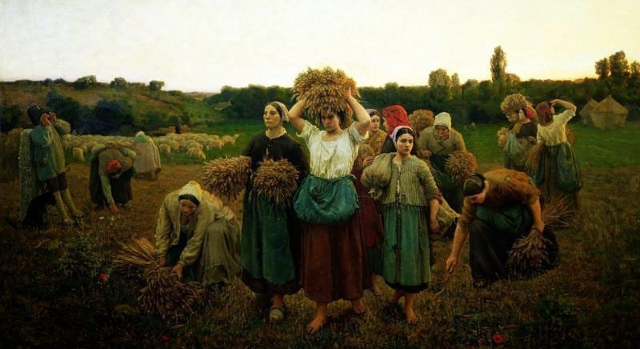
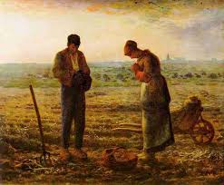

O Naturalismo é um estilo de época surgido na segunda metade do século XIX, na Europa. O naturalismo no Brasil foi inaugurado em 1881, com a publicação da obra O mulato, de Aluísio Azevedo. A principal característica desse estilo de época é o determinismo, ou seja, o destino dos personagens é determinado pela raça, meio em que vivem e época em que estão inseridos.
Principais Caracteristicas:
Ênfase no lado mais animalesco do homem: a fome, o instinto, a parte “não civilizada”, a sexualidade etc., bem como a zoomorfização de personagens;
Determinismo: o indivíduo não é mais sujeito, mas um figurante da história, resultado das influências do meio;
Cientificismo: o homem é entendido como produto das leis naturais;
Patologias sociais: as obras naturalistas enfatizam esses temas, trazendo à tona tópicos como as taras sexuais, os vícios, as doenças, o incesto, o adultério;
Objetividade e impessoalidade narrativas;
Preferência por temas cotidianos, frequentemente priorizando as relações e vivências das classes “inferiores”;
Predominância da forma descritiva;
Obras comumente engajadas, denúncias de aspectos socialmente retrógrados, da miséria e do sistema de desigualdades que fundamentava o capitalismo que surgia."
Contexto Histórico:
Quando o Naturalismo começou, ainda no século XIX, a Europa enfrentava intensas mudanças políticas, sociais e econômicas decorrentes da Revolução Industrial e da Revolução Francesa. Nesse contexto, diante da industrialização, surgiu uma nova ordem no sistema capitalista, que dividiu a sociedade entre burguesia e proletariado.
Quando o cientista britânico Charles Darwin (1809-1882) publicou o livro A origem das espécies, em 1859, o ser humano passou a ser visto como resultado de um processo natural de evolução, e não mais como uma criação divina. E, apesar das críticas dos conservadores, essa visão foi aceita por grande parte da comunidade científica.
No final do século XIX, portanto, o antropocentrismo predominou, ou seja, a valorização da razão. Assim, a perspectiva positivista não se ateve às terras europeias e logo chegou ao território brasileiro. Aqui, influenciou intelectuais, escritores e artistas, em um contexto político conturbado.
D.Pedro II (1825-1891) era o representante de uma monarquia enfraquecida, constantemente atacada pelo crescente movimento republicano. Imperava no Brasil o conservadorismo, representado por fazendeiros escravocratas, os quais resistiam aos abolicionistas, que almejavam o fim da escravatura, só alcançado em 1888.
Obras do período:
A Mentinga(1899)-Almeida Junior

Chamada Nas Respingadeiras(1859)-Jules Breton

Angelos(1859)- Jean-François Millet
Obras literárias:
PERÍODOS:
AUTORES:
OBRAS LITERÁRIAS:
REALISMO:
Aluísio Azevedo
Casa de pensão (1883)
Raul Pompeia
O Ateneu(1888)
Machado de Assis
Memórias póstumas de Brás Cubas(1881)
NATURALISMO:
Aluísio Azevedo
O cortiço (1890)
Adolfo Caminha
Bom-crioulo (1895)
Júlio Ribeiro
A carne (1888)
PARNASIANISMO:
Vicente de Carvalho
Relicário (1888)
Olavo Bilac
Crônicas e novelas (1894)
Raimundo Correia
Versos e versões (1887)
Contexto Histórico Geral:
A segunda metade do século XIX foi marcada por muitos acontecimentos históricos, incluindo a Segunda Revolução Industrial e mudanças estruturais no Brasil:
Segunda Revolução Industrial:
A Segunda Revolução Industrial foi uma fase de desenvolvimento tecnológico que ocorreu entre 1850 e 1945, aproximadamente. Caracterizou-se pela introdução de novas técnicas e fontes de energia, como o petróleo e a eletricidade, e pelo uso de tecnologias da comunicação e da mobilidade.
Utilizou-se da energia elétrica e do petróleo como fontes de energia, sendo o aço uma das principais matérias-primas. A partir de então, teve-se o aprimoramento de uma série de setores industriais e o surgimento de novas indústrias, o que refletiu de forma direta no sistema econômico, no ordenamento territorial e na vida cotidiana.
No Brasil:
Na metade do século 19, o Brasil passou por uma série de transformações políticas, sociais e econômicas importantes
Reinado de Dom Pedro II: Dom Pedro II, que assumiu o trono em 1831 após a abdicação de seu pai, Dom Pedro I, foi um governante central durante a metade do século 19. Seu reinado, que durou até 1889, foi marcado por um período de relativa estabilidade política e avanços em várias áreas.
Abolição da Escravatura: O movimento para a abolição da escravatura ganhou força na segunda metade do século 19. Em 1850, foi aprovada a Lei Eusébio de Queirós, que proibiu o tráfico de escravos. O processo culminou com a promulgação da Lei Áurea em 13 de maio de 1888, que aboliu a escravidão no Brasil. Essa mudança teve um impacto profundo na sociedade brasileira, mas também gerou desafios para a integração dos ex-escravizados na sociedade.
Crescimento Econômico e Modernização: A economia brasileira começou a se diversificar e modernizar durante este período. O café tornou-se a principal exportação do país, especialmente na região do Vale do Paraíba e no estado de São Paulo. O crescimento das plantações de café ajudou a impulsionar a economia e a modernização das infraestruturas, como a construção de ferrovias.
Guerra do Paraguai: O Brasil participou da Guerra do Paraguai (1864-1870), uma das mais importantes guerras da América do Sul na época, ao lado de Argentina e Uruguai, contra o Paraguai. A guerra teve grandes custos humanos e financeiros, mas também consolidou o papel do Brasil como uma potência regional.
Movimentos Políticos e Sociais: Durante este período, o Brasil viu a formação de movimentos políticos e sociais, incluindo a crescente pressão por reformas e a consolidação das ideias republicanas, que eventualmente levariam à Proclamação da República em 1889, pouco após a abolição da escravatura.
Modernização e Urbanização: As cidades brasileiras começaram a se modernizar, com o crescimento das cidades portuárias e a construção de novas infraestruturas. O período também viu o início de um processo de urbanização, com a expansão das cidades e a melhoria das condições urbanas, embora ainda houvesse grandes desafios.